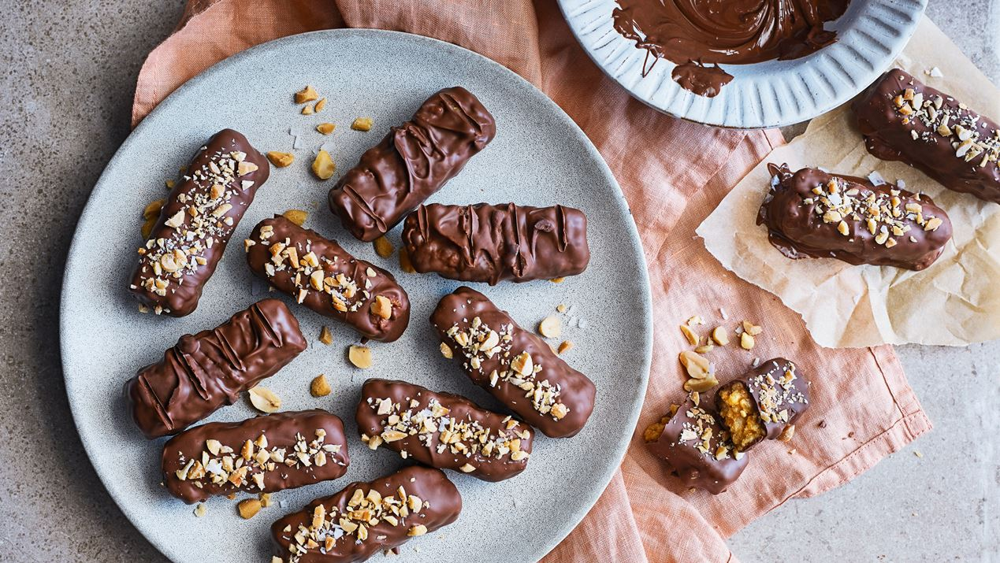

Snickers

Krispiga snickers i form av bars. Lättlagat recept på hemgjorda snickers
- perfekta att bjuda på när sötsuget sätter in. De här görs på bl.a.
jordnötssmör, sirap och smör. Doppas sen i smält choklad. Enkla att göra
och oemotståndligt goda!
Ingridienser
- Jordnötssmör 1½ dl
- Arla® Svenskt smör 25 g
- Ljus sirap 1 dl
- Strösocker 2 msk
- Rice krispies 6 dl
- Mörk choklad 100 g
- Mjölkchoklad 200 g
- Salta jordnötter 1 dl
- Lite flingsalt
Gör så här
- Blanda jordnötssmör, smör, sirap och socker i en kastrull. Låt allt
smälta samman och sjud på medelvärme 1-2 min under omrörning.
- Ta kastrullen från värmen. Vänd ner flingorna. Låt svalna något.
- Forma 14 avlånga bitar av smeten med blöta händer. Lägg på
bakplåtspapper och ställ kallt ca 10 min.
- Smält chokladen i mikro eller över vattenbad. Doppa bitarna i
chokladen och lägg dem på galler.
- Hacka nötterna och strö dem över kakorna. Toppa ev med lite
flingsalt. Ställ dina snickers kallt minst 20 min.
Back to main page